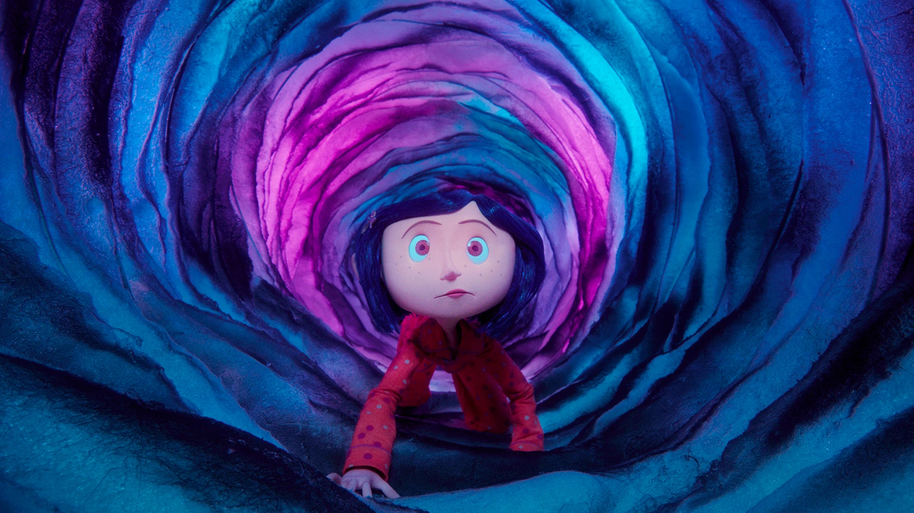

The Wonderful World of Stop Motion Animation
-- Visual Storytelling's Soulmate --

I have been fascinated by stop-motion animation for quite some time. My interest began at the ripe age of eight, when I eagerly told everyone in third grade that my new favourite movie was The Nightmare Before Christmas (1993) by Tim Burton. While our generation largely grew up on traditional and 3D animation, it was the intricate handcrafted sets and unforgettable puppet designs of stop motion that truly captivated me, forever setting them apart. I find incredible value in the effort that it takes for these studios to make such impressive masterpieces. Between the photography, behind the scenes editing, music, and directional vision... I have yet to be disappointed by a stop motion animated movie.
WAKE UP!! STOP MOTION MOVIES ARE UNDERRATED! (here's a watchlist)
- The House
- Fantastic Planet
- The Little Prince
- Chicken Run
- Isle of Dogs
- Wallace & Grommit: Vengeance Most Fowl
I truly believe that they cannot be replicated in the same way. The creative team must be significantly more imaginative when they have to make things physically.
For example:
In the movie Coraline, approximately 250,000 pieces of individual popcorn were used to create the cherry blossom effects on nearly 70 trees. Each indiviual kernel was painted to resemeble a flower, the process taking around 800 hours total.

These details add a distinctive charm that sets stop-motion films apart. Watching them offers a timeless experience. Unlike computer-generated animation, which can start to feel dated as technology advances, the handcrafted artistry of stop motion immerses the audience in the filmmaker’s vision at its most authentic. Few creative forms dissolve the divide between subject and creator so effectively.
The result is a raw, powerful expression that often delivers a depth and maturity missing from many other animated works.